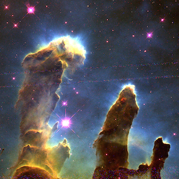
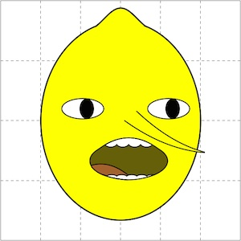
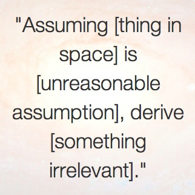

Back
Matplotlib Fun & Other Programming

Tri-color Images
How to make and display a tri-color image using only Python/Matplotlib, adapted from
AstroBetter
.

Lemongrab
How to plot the character Lemongrab from Adventure Time. This is how I taught myself Matplotlib.

Astronomy Question Generator
Ever notice how a lot of undergraduate-level astronomy homework questions follow a certain pattern? Inspired by the
Academic Sentence Generator
.